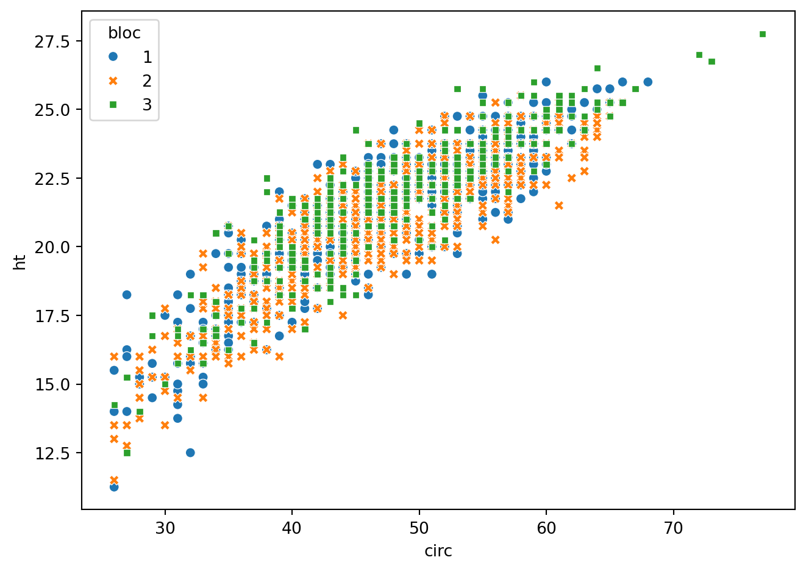
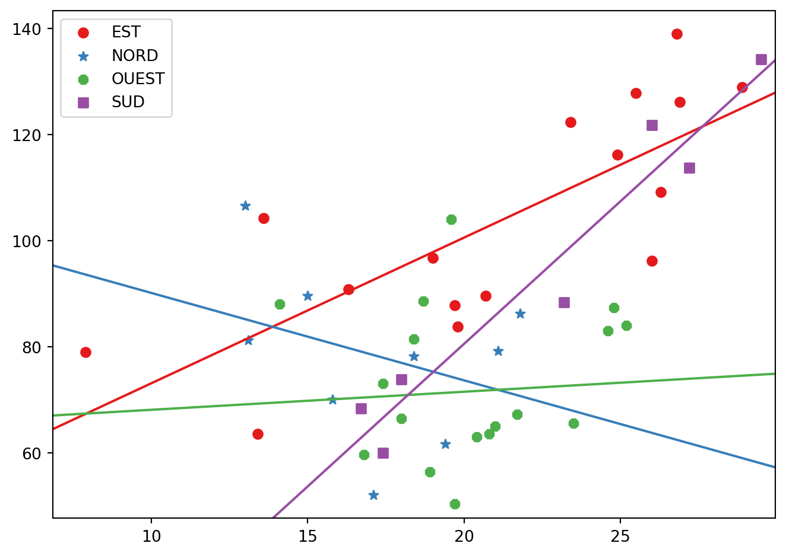
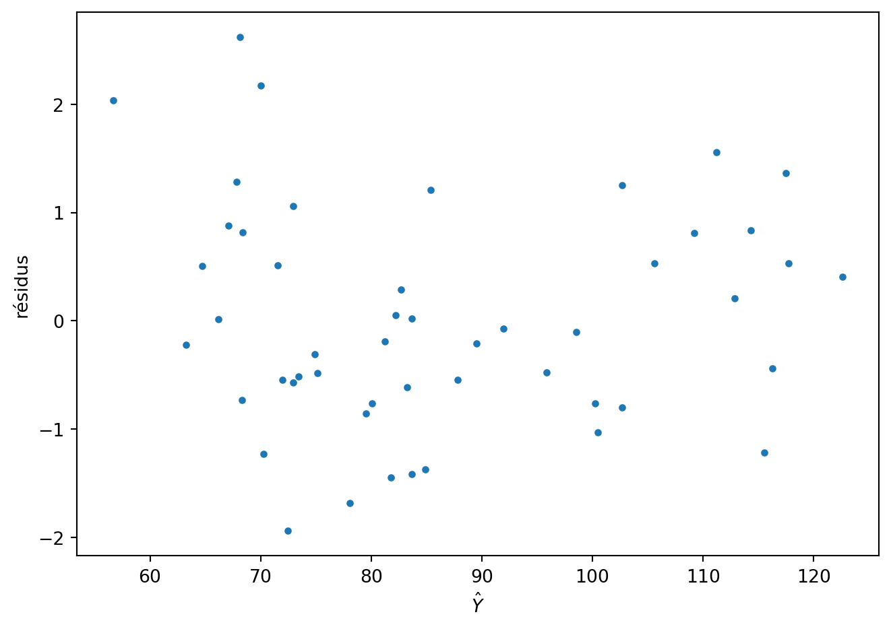
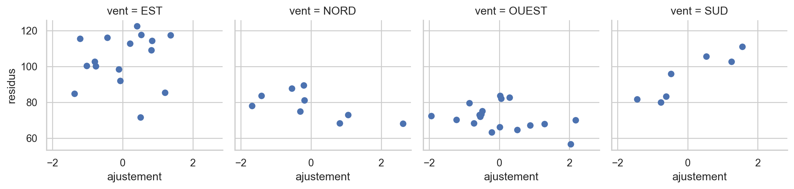
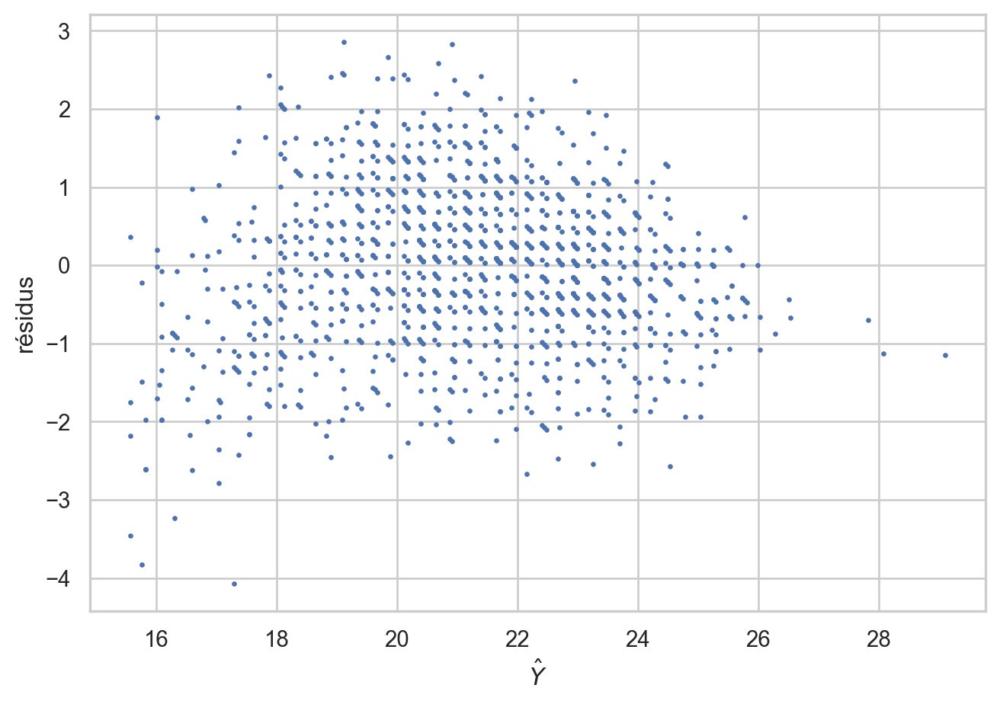
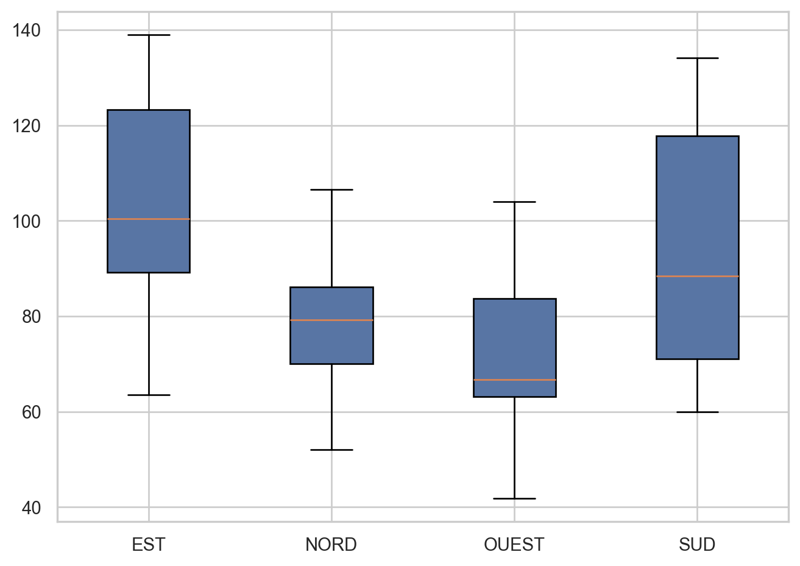
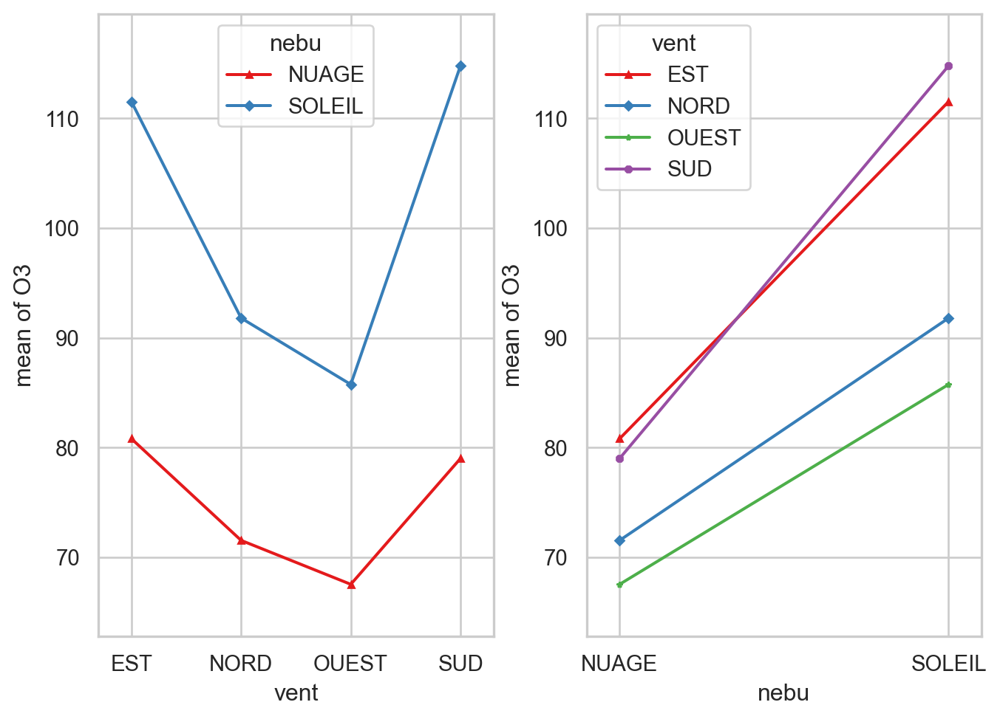

import pandas as pd; import numpy as np
import matplotlib.pyplot as plt
import matplotlib.cm as cm
import seaborn as sns
import statsmodels.api as sm
import statsmodels.formula.api as smf
from statsmodels.graphics import regressionplots
from statsmodels.graphics.api import interaction_plot
import pandas as pdVariables qualitatives : ANCOVA et ANOVA
fig = plt.figure()
eucalypt = pd.read_csv("../donnees/eucalyptus.txt", header = 0, sep = ";")
eucalypt["bloc"] = eucalypt["bloc"].astype("category")
sns.scatterplot(data=eucalypt, x="circ", y="ht", hue="bloc",style='bloc')
fig.tight_layout()
La concentration en ozone
ozone = pd.read_csv("../donnees/ozone.txt", header = 0, sep = ";")
ozone["vent"]=ozone["vent"].astype("category")
niveau = ozone["vent"].cat.categories
cc = cm.Set1(range(niveau.size))
mm = ["o","*","8","s"]
fig, ax = plt.subplots()
for i, val in enumerate(niveau):
print(val)
reg = smf.ols("O3 ~ 1 + T12",data=ozone.loc[ozone["vent"]==val]).fit()
plt.scatter(ozone.loc[ozone["vent"]==val,"T12"],ozone.loc[ozone["vent"]==val,"O3"],
color=cc[i],label=val, marker=mm[i])
regressionplots.abline_plot(model_results=reg, ax=ax, color=cc[i])
plt.legend()
fig.tight_layout()EST
NORD
OUEST
SUD
mod1b = smf.ols('O3 ~ -1 + vent + T12:vent', data = ozone).fit()
mod1b.summary()| Dep. Variable: | O3 | R-squared: | 0.675 |
| Model: | OLS | Adj. R-squared: | 0.621 |
| Method: | Least Squares | F-statistic: | 12.48 |
| Date: | Fri, 31 Jan 2025 | Prob (F-statistic): | 1.61e-08 |
| Time: | 16:29:15 | Log-Likelihood: | -201.01 |
| No. Observations: | 50 | AIC: | 418.0 |
| Df Residuals: | 42 | BIC: | 433.3 |
| Df Model: | 7 | ||
| Covariance Type: | nonrobust |
| coef | std err | t | P>|t| | [0.025 | 0.975] | |
| vent[EST] | 45.6090 | 13.934 | 3.273 | 0.002 | 17.488 | 73.730 |
| vent[NORD] | 106.6345 | 28.034 | 3.804 | 0.000 | 50.059 | 163.209 |
| vent[OUEST] | 64.6840 | 24.621 | 2.627 | 0.012 | 14.997 | 114.371 |
| vent[SUD] | -27.0602 | 26.539 | -1.020 | 0.314 | -80.618 | 26.498 |
| T12:vent[EST] | 2.7480 | 0.634 | 4.333 | 0.000 | 1.468 | 4.028 |
| T12:vent[NORD] | -1.6491 | 1.606 | -1.027 | 0.310 | -4.890 | 1.592 |
| T12:vent[OUEST] | 0.3407 | 1.205 | 0.283 | 0.779 | -2.091 | 2.772 |
| T12:vent[SUD] | 5.3786 | 1.150 | 4.678 | 0.000 | 3.058 | 7.699 |
| Omnibus: | 0.276 | Durbin-Watson: | 1.561 |
| Prob(Omnibus): | 0.871 | Jarque-Bera (JB): | 0.465 |
| Skew: | 0.007 | Prob(JB): | 0.793 |
| Kurtosis: | 2.528 | Cond. No. | 168. |
Notes:
[1] Standard Errors assume that the covariance matrix of the errors is correctly specified.
mod1 =smf.ols('O3 ~ vent + T12:vent', data = ozone).fit()
mod1.summary()| Dep. Variable: | O3 | R-squared: | 0.675 |
| Model: | OLS | Adj. R-squared: | 0.621 |
| Method: | Least Squares | F-statistic: | 12.48 |
| Date: | Fri, 31 Jan 2025 | Prob (F-statistic): | 1.61e-08 |
| Time: | 16:29:15 | Log-Likelihood: | -201.01 |
| No. Observations: | 50 | AIC: | 418.0 |
| Df Residuals: | 42 | BIC: | 433.3 |
| Df Model: | 7 | ||
| Covariance Type: | nonrobust |
| coef | std err | t | P>|t| | [0.025 | 0.975] | |
| Intercept | 45.6090 | 13.934 | 3.273 | 0.002 | 17.488 | 73.730 |
| vent[T.NORD] | 61.0255 | 31.306 | 1.949 | 0.058 | -2.153 | 124.204 |
| vent[T.OUEST] | 19.0751 | 28.290 | 0.674 | 0.504 | -38.017 | 76.168 |
| vent[T.SUD] | -72.6691 | 29.975 | -2.424 | 0.020 | -133.160 | -12.178 |
| T12:vent[EST] | 2.7480 | 0.634 | 4.333 | 0.000 | 1.468 | 4.028 |
| T12:vent[NORD] | -1.6491 | 1.606 | -1.027 | 0.310 | -4.890 | 1.592 |
| T12:vent[OUEST] | 0.3407 | 1.205 | 0.283 | 0.779 | -2.091 | 2.772 |
| T12:vent[SUD] | 5.3786 | 1.150 | 4.678 | 0.000 | 3.058 | 7.699 |
| Omnibus: | 0.276 | Durbin-Watson: | 1.561 |
| Prob(Omnibus): | 0.871 | Jarque-Bera (JB): | 0.465 |
| Skew: | 0.007 | Prob(JB): | 0.793 |
| Kurtosis: | 2.528 | Cond. No. | 223. |
Notes:
[1] Standard Errors assume that the covariance matrix of the errors is correctly specified.
mod2 = smf.ols('O3 ~ vent + T12', data = ozone).fit()
mod2b = smf.ols('O3 ~ -1 + vent + T12', data = ozone).fit()
mod3 = smf.ols('O3 ~ vent:T12', data = ozone).fit()
round(sm.stats.anova_lm(mod2,mod1),3)| df_resid | ssr | df_diff | ss_diff | F | Pr(>F) | |
|---|---|---|---|---|---|---|
| 0 | 45.0 | 12611.951 | 0.0 | NaN | NaN | NaN |
| 1 | 42.0 | 9087.431 | 3.0 | 3524.521 | 5.43 | 0.003 |
round(sm.stats.anova_lm(mod3,mod1),3)| df_resid | ssr | df_diff | ss_diff | F | Pr(>F) | |
|---|---|---|---|---|---|---|
| 0 | 45.0 | 11864.057 | 0.0 | NaN | NaN | NaN |
| 1 | 42.0 | 9087.431 | 3.0 | 2776.626 | 4.278 | 0.01 |
infl = mod2.get_influence()
fig = plt.figure()
plt.plot(mod2.fittedvalues,infl.resid_studentized_external,".")
plt.ylabel('résidus')
plt.xlabel(r'$\hat Y$')
fig.tight_layout()
fitted2 = mod2.fittedvalues
sns.set(style="whitegrid")
fitted3 = 1/5* abs(fitted2.round(3))
dfresid = pd.concat([fitted2, pd.Series(infl.resid_studentized_external), ozone[["O3", "vent"]]], axis=1)
dfresid.columns=["residus", "ajustement", "O3", "vent"]
g = sns.FacetGrid(dfresid, col="vent")
g = g.map(plt.scatter, "ajustement", "residus")
fig.tight_layout()
mod = smf.ols('O3 ~ vent + T12 + T12:vent', data = ozone).fit()
mod.summary()| Dep. Variable: | O3 | R-squared: | 0.675 |
| Model: | OLS | Adj. R-squared: | 0.621 |
| Method: | Least Squares | F-statistic: | 12.48 |
| Date: | Fri, 31 Jan 2025 | Prob (F-statistic): | 1.61e-08 |
| Time: | 16:29:16 | Log-Likelihood: | -201.01 |
| No. Observations: | 50 | AIC: | 418.0 |
| Df Residuals: | 42 | BIC: | 433.3 |
| Df Model: | 7 | ||
| Covariance Type: | nonrobust |
| coef | std err | t | P>|t| | [0.025 | 0.975] | |
| Intercept | 45.6090 | 13.934 | 3.273 | 0.002 | 17.488 | 73.730 |
| vent[T.NORD] | 61.0255 | 31.306 | 1.949 | 0.058 | -2.153 | 124.204 |
| vent[T.OUEST] | 19.0751 | 28.290 | 0.674 | 0.504 | -38.017 | 76.168 |
| vent[T.SUD] | -72.6691 | 29.975 | -2.424 | 0.020 | -133.160 | -12.178 |
| T12 | 2.7480 | 0.634 | 4.333 | 0.000 | 1.468 | 4.028 |
| T12:vent[T.NORD] | -4.3971 | 1.726 | -2.547 | 0.015 | -7.881 | -0.913 |
| T12:vent[T.OUEST] | -2.4073 | 1.361 | -1.768 | 0.084 | -5.155 | 0.340 |
| T12:vent[T.SUD] | 2.6306 | 1.313 | 2.004 | 0.052 | -0.019 | 5.280 |
| Omnibus: | 0.276 | Durbin-Watson: | 1.561 |
| Prob(Omnibus): | 0.871 | Jarque-Bera (JB): | 0.465 |
| Skew: | 0.007 | Prob(JB): | 0.793 |
| Kurtosis: | 2.528 | Cond. No. | 407. |
Notes:
[1] Standard Errors assume that the covariance matrix of the errors is correctly specified.
La hauteur des eucalyptus
eucalypt = pd.read_csv("../donnees/eucalyptus.txt", header = 0, sep = ";")
eucalypt["bloc"] = eucalypt["bloc"].astype("category")
m_complet = smf.ols("ht ~ - 1 + bloc + bloc:circ", data = eucalypt).fit()
m_pente = smf.ols("ht ~ - 1 + bloc + circ", data = eucalypt).fit()
m_ordonne = smf.ols("ht ~ 1 + bloc:circ", data = eucalypt).fit()
sm.stats.anova_lm(m_pente, m_complet)| df_resid | ssr | df_diff | ss_diff | F | Pr(>F) | |
|---|---|---|---|---|---|---|
| 0 | 1425.0 | 2005.895987 | 0.0 | NaN | NaN | NaN |
| 1 | 1423.0 | 2005.048468 | 2.0 | 0.847519 | 0.300746 | 0.740313 |
round(sm.stats.anova_lm(m_ordonne, m_complet),3)| df_resid | ssr | df_diff | ss_diff | F | Pr(>F) | |
|---|---|---|---|---|---|---|
| 0 | 1425.0 | 2009.213 | 0.0 | NaN | NaN | NaN |
| 1 | 1423.0 | 2005.048 | 2.0 | 4.165 | 1.478 | 0.228 |
m_simple = smf.ols("ht ~ 1 + circ", data = eucalypt).fit()
round(sm.stats.anova_lm(m_simple,m_pente),3)| df_resid | ssr | df_diff | ss_diff | F | Pr(>F) | |
|---|---|---|---|---|---|---|
| 0 | 1427.0 | 2052.084 | 0.0 | NaN | NaN | NaN |
| 1 | 1425.0 | 2005.896 | 2.0 | 46.188 | 16.406 | 0.0 |
plt.rc("lines", markersize=3) #
infl = m_pente.get_influence()
fig = plt.figure()
plt.plot(m_pente.fittedvalues,infl.resid_studentized_external,".")
plt.ylabel('résidus')
plt.xlabel(r'$\hat Y$')
fig.tight_layout()
ANOVA
niveau = ozone["vent"].cat.categories
O3_parvent = []
for i in range(niveau.size):
O3_parvent.append(list(ozone.loc[ozone["vent"]==niveau[i],"O3"]))
fig, ax = plt.subplots(1,1)
bplot = ax.boxplot(O3_parvent,patch_artist=True,tick_labels=niveau )
for patch in bplot["boxes"]:
patch.set_facecolor("#5875a4")
fig.tight_layout()
mod1 = smf.ols("O3~vent-1",data=ozone).fit()
mod1.summary()| Dep. Variable: | O3 | R-squared: | 0.352 |
| Model: | OLS | Adj. R-squared: | 0.310 |
| Method: | Least Squares | F-statistic: | 8.338 |
| Date: | Fri, 31 Jan 2025 | Prob (F-statistic): | 0.000156 |
| Time: | 16:29:18 | Log-Likelihood: | -218.28 |
| No. Observations: | 50 | AIC: | 444.6 |
| Df Residuals: | 46 | BIC: | 452.2 |
| Df Model: | 3 | ||
| Covariance Type: | nonrobust |
| coef | std err | t | P>|t| | [0.025 | 0.975] | |
| vent[EST] | 103.8500 | 4.963 | 20.923 | 0.000 | 93.859 | 113.841 |
| vent[NORD] | 78.2889 | 6.618 | 11.830 | 0.000 | 64.968 | 91.610 |
| vent[OUEST] | 71.5778 | 4.680 | 15.296 | 0.000 | 62.158 | 80.997 |
| vent[SUD] | 94.3429 | 7.504 | 12.572 | 0.000 | 79.238 | 109.447 |
| Omnibus: | 1.682 | Durbin-Watson: | 1.737 |
| Prob(Omnibus): | 0.431 | Jarque-Bera (JB): | 1.184 |
| Skew: | 0.083 | Prob(JB): | 0.553 |
| Kurtosis: | 2.264 | Cond. No. | 1.60 |
Notes:
[1] Standard Errors assume that the covariance matrix of the errors is correctly specified.
round(sm.stats.anova_lm(mod1),3)| df | sum_sq | mean_sq | F | PR(>F) | |
|---|---|---|---|---|---|
| vent | 4.0 | 382244.343 | 95561.086 | 242.442 | 0.0 |
| Residual | 46.0 | 18131.377 | 394.160 | NaN | NaN |
mod2 = smf.ols("O3 ~ vent", data = ozone).fit()
mod2.summary()| Dep. Variable: | O3 | R-squared: | 0.352 |
| Model: | OLS | Adj. R-squared: | 0.310 |
| Method: | Least Squares | F-statistic: | 8.338 |
| Date: | Fri, 31 Jan 2025 | Prob (F-statistic): | 0.000156 |
| Time: | 16:29:18 | Log-Likelihood: | -218.28 |
| No. Observations: | 50 | AIC: | 444.6 |
| Df Residuals: | 46 | BIC: | 452.2 |
| Df Model: | 3 | ||
| Covariance Type: | nonrobust |
| coef | std err | t | P>|t| | [0.025 | 0.975] | |
| Intercept | 103.8500 | 4.963 | 20.923 | 0.000 | 93.859 | 113.841 |
| vent[T.NORD] | -25.5611 | 8.272 | -3.090 | 0.003 | -42.212 | -8.910 |
| vent[T.OUEST] | -32.2722 | 6.821 | -4.731 | 0.000 | -46.003 | -18.541 |
| vent[T.SUD] | -9.5071 | 8.997 | -1.057 | 0.296 | -27.617 | 8.603 |
| Omnibus: | 1.682 | Durbin-Watson: | 1.737 |
| Prob(Omnibus): | 0.431 | Jarque-Bera (JB): | 1.184 |
| Skew: | 0.083 | Prob(JB): | 0.553 |
| Kurtosis: | 2.264 | Cond. No. | 4.51 |
Notes:
[1] Standard Errors assume that the covariance matrix of the errors is correctly specified.
round(sm.stats.anova_lm(mod2),3)| df | sum_sq | mean_sq | F | PR(>F) | |
|---|---|---|---|---|---|
| vent | 3.0 | 9859.843 | 3286.614 | 8.338 | 0.0 |
| Residual | 46.0 | 18131.377 | 394.160 | NaN | NaN |
smf.ols("O3 ~ C(vent,Treatment)", data = ozone).fit().paramsIntercept 103.850000
C(vent, Treatment)[T.NORD] -25.561111
C(vent, Treatment)[T.OUEST] -32.272222
C(vent, Treatment)[T.SUD] -9.507143
dtype: float64smf.ols("O3 ~ C(vent, levels=['NORD', 'EST', 'OUEST', 'SUD'])", \
data = ozone).fit().paramsIntercept 78.288889
C(vent, levels=['NORD', 'EST', 'OUEST', 'SUD'])[T.EST] 25.561111
C(vent, levels=['NORD', 'EST', 'OUEST', 'SUD'])[T.OUEST] -6.711111
C(vent, levels=['NORD', 'EST', 'OUEST', 'SUD'])[T.SUD] 16.053968
dtype: float64from patsy import dmatrix, ContrastMatrix
II = ozone["vent"].cat.categories.size
nI = ozone["vent"].value_counts()[ozone["vent"].cat.categories]
contr_mat = np.vstack([np.eye(II-1), (-nI[:(II-1)]).divide(nI[-1])])
contraste = ContrastMatrix(contr_mat, ["[a1]", "[a2]", "[a3]"])
mod3 = smf.ols("O3 ~ 1 + C(vent,contraste)",data=ozone).fit()
mod3.summary()| Dep. Variable: | O3 | R-squared: | 0.352 |
| Model: | OLS | Adj. R-squared: | 0.310 |
| Method: | Least Squares | F-statistic: | 8.338 |
| Date: | Fri, 31 Jan 2025 | Prob (F-statistic): | 0.000156 |
| Time: | 16:29:18 | Log-Likelihood: | -218.28 |
| No. Observations: | 50 | AIC: | 444.6 |
| Df Residuals: | 46 | BIC: | 452.2 |
| Df Model: | 3 | ||
| Covariance Type: | nonrobust |
| coef | std err | t | P>|t| | [0.025 | 0.975] | |
| Intercept | 86.3000 | 2.808 | 30.737 | 0.000 | 80.648 | 91.952 |
| C(vent, contraste)[a1] | 17.5500 | 4.093 | 4.288 | 0.000 | 9.311 | 25.789 |
| C(vent, contraste)[a2] | -8.0111 | 5.993 | -1.337 | 0.188 | -20.074 | 4.052 |
| C(vent, contraste)[a3] | -14.7222 | 3.744 | -3.933 | 0.000 | -22.258 | -7.187 |
| Omnibus: | 1.682 | Durbin-Watson: | 1.737 |
| Prob(Omnibus): | 0.431 | Jarque-Bera (JB): | 1.184 |
| Skew: | 0.083 | Prob(JB): | 0.553 |
| Kurtosis: | 2.264 | Cond. No. | 3.34 |
Notes:
[1] Standard Errors assume that the covariance matrix of the errors is correctly specified.
round(sm.stats.anova_lm(mod3),3)| df | sum_sq | mean_sq | F | PR(>F) | |
|---|---|---|---|---|---|
| C(vent, contraste) | 3.0 | 9859.843 | 3286.614 | 8.338 | 0.0 |
| Residual | 46.0 | 18131.377 | 394.160 | NaN | NaN |
mod4 = smf.ols("O3 ~ 1+ C(vent,Sum)", data = ozone).fit()
round(sm.stats.anova_lm(mod4),3)| df | sum_sq | mean_sq | F | PR(>F) | |
|---|---|---|---|---|---|
| C(vent, Sum) | 3.0 | 9859.843 | 3286.614 | 8.338 | 0.0 |
| Residual | 46.0 | 18131.377 | 394.160 | NaN | NaN |
print(ozone) Date O3 T12 T15 Ne12 N12 S12 E12 W12 Vx O3v \
0 19960422 63.6 13.4 15.0 7 0 0 3 0 9.35 95.6
1 19960429 89.6 15.0 15.7 4 3 0 0 0 5.40 100.2
2 19960506 79.0 7.9 10.1 8 0 0 7 0 19.30 105.6
3 19960514 81.2 13.1 11.7 7 7 0 0 0 12.60 95.2
4 19960521 88.0 14.1 16.0 6 0 0 0 6 -20.30 82.8
5 19960528 68.4 16.7 18.1 7 0 3 0 0 -3.69 71.4
6 19960605 139.0 26.8 28.2 1 0 0 3 0 8.27 90.0
7 19960612 78.2 18.4 20.7 7 4 0 0 0 4.93 60.0
8 19960619 113.8 27.2 27.7 6 0 4 0 0 -4.93 125.8
9 19960627 41.8 20.6 19.7 8 0 0 0 1 -3.38 62.6
10 19960704 65.0 21.0 21.1 6 0 0 0 7 -23.68 38.0
11 19960711 73.0 17.4 22.8 8 0 0 0 2 -6.24 70.8
12 19960719 126.2 26.9 29.5 2 0 0 4 0 14.18 119.8
13 19960726 127.8 25.5 27.8 3 0 0 5 0 13.79 103.6
14 19960802 61.6 19.4 21.5 7 6 0 0 0 -7.39 69.2
15 19960810 63.6 20.8 21.4 7 0 0 0 5 -13.79 48.0
16 19960817 134.2 29.5 30.6 2 0 3 0 0 1.88 118.6
17 19960824 67.2 21.7 20.3 7 0 0 0 7 -24.82 60.0
18 19960901 87.8 19.7 21.7 5 0 0 3 0 9.35 74.4
19 19960908 96.8 19.0 21.0 6 0 0 8 0 28.36 103.8
20 19960915 89.6 20.7 22.9 1 0 0 4 0 12.47 78.8
21 19960923 66.4 18.0 18.5 7 0 0 0 2 -5.52 72.2
22 19960930 60.0 17.4 16.4 8 0 6 0 0 -10.80 53.4
23 19970414 90.8 16.3 18.1 0 0 0 5 0 18.00 89.0
24 19970422 104.2 13.6 14.4 1 0 0 1 0 3.55 97.8
25 19970429 70.0 15.8 16.7 7 7 0 0 0 -12.60 61.4
26 19970708 96.2 26.0 27.3 2 0 0 5 0 16.91 87.4
27 19970715 65.6 23.5 23.7 7 0 0 0 3 -9.35 67.8
28 19970722 109.2 26.3 27.3 4 0 0 5 0 16.91 98.6
29 19970730 86.2 21.8 23.6 6 4 0 0 0 2.50 112.0
30 19970806 87.4 24.8 26.6 3 0 0 0 2 -7.09 49.8
31 19970813 84.0 25.2 27.5 3 0 0 0 3 -10.15 131.8
32 19970821 83.0 24.6 27.9 3 0 0 0 2 -5.52 113.8
33 19970828 59.6 16.8 19.0 7 0 0 0 8 -27.06 55.8
34 19970904 52.0 17.1 18.3 8 5 0 0 0 -3.13 65.8
35 19970912 73.8 18.0 18.3 7 0 5 0 0 -11.57 90.4
36 19970919 129.0 28.9 30.0 1 0 0 3 0 8.27 111.4
37 19970926 122.4 23.4 25.4 0 0 0 2 0 5.52 118.6
38 19980504 106.6 13.0 14.3 3 7 0 0 0 12.60 84.0
39 19980511 121.8 26.0 28.0 2 0 4 0 0 2.50 109.8
40 19980518 116.2 24.9 25.8 2 0 0 5 0 18.00 142.8
41 19980526 81.4 18.4 16.8 7 0 0 0 4 -14.40 80.8
42 19980602 88.6 18.7 19.6 5 0 0 0 5 -15.59 60.4
43 19980609 63.0 20.4 16.6 7 0 0 0 8 -22.06 79.8
44 19980617 104.0 19.6 21.2 6 0 0 0 3 -10.80 84.6
45 19980624 88.4 23.2 23.9 4 0 4 0 0 -7.20 92.6
46 19980701 83.8 19.8 20.3 8 0 0 5 0 17.73 40.2
47 19980709 56.4 18.9 19.3 8 0 0 0 4 -14.40 73.6
48 19980716 50.4 19.7 19.3 7 0 0 0 5 -17.73 59.0
49 19980724 79.2 21.1 21.9 3 4 0 0 0 9.26 55.2
nebu vent
0 NUAGE EST
1 SOLEIL NORD
2 NUAGE EST
3 NUAGE NORD
4 NUAGE OUEST
5 NUAGE SUD
6 SOLEIL EST
7 NUAGE NORD
8 NUAGE SUD
9 NUAGE OUEST
10 NUAGE OUEST
11 NUAGE OUEST
12 SOLEIL EST
13 SOLEIL EST
14 NUAGE NORD
15 NUAGE OUEST
16 SOLEIL SUD
17 NUAGE OUEST
18 SOLEIL EST
19 NUAGE EST
20 SOLEIL EST
21 NUAGE OUEST
22 NUAGE SUD
23 SOLEIL EST
24 SOLEIL EST
25 NUAGE NORD
26 SOLEIL EST
27 NUAGE OUEST
28 SOLEIL EST
29 NUAGE NORD
30 SOLEIL OUEST
31 SOLEIL OUEST
32 SOLEIL OUEST
33 NUAGE OUEST
34 NUAGE NORD
35 NUAGE SUD
36 SOLEIL EST
37 SOLEIL EST
38 SOLEIL NORD
39 SOLEIL SUD
40 SOLEIL EST
41 NUAGE OUEST
42 SOLEIL OUEST
43 NUAGE OUEST
44 NUAGE OUEST
45 SOLEIL SUD
46 NUAGE EST
47 NUAGE OUEST
48 NUAGE OUEST
49 SOLEIL NORD ozone = pd.read_csv("../donnees/ozone.txt", header = 0, sep = ";")
ozone["vent"]=ozone["vent"].astype("category")
ozone["nebu"]=ozone["nebu"].astype("category")
plt.rcParams['font.size'] = '7'
from statsmodels.graphics.api import interaction_plot
cc2 = cm.Set1(range(ozone["vent"].cat.categories.size))
fig, axs = plt.subplots(1,2)
plt.rcParams['font.size'] = '4'
interaction_plot(ozone["vent"].astype("str"), ozone["nebu"].astype("str"), ozone["O3"], colors=cc2[:2], markers=['^','D'],ax=axs[0])
interaction_plot( ozone["nebu"].astype("str"), ozone["vent"].astype("str"),ozone["O3"], colors=cc2, markers=['^','D',"*","8"],ax=axs[1])
fig.tight_layout()
mod1 = smf.ols("O3 ~ vent + nebu + vent:nebu", data = ozone).fit()
mod2 = smf.ols("O3 ~ vent + nebu ", data = ozone).fit()
sm.stats.anova_lm(mod2,mod1)| df_resid | ssr | df_diff | ss_diff | F | Pr(>F) | |
|---|---|---|---|---|---|---|
| 0 | 45.0 | 11729.859077 | 0.0 | NaN | NaN | NaN |
| 1 | 42.0 | 11246.238571 | 3.0 | 483.620506 | 0.60204 | 0.617302 |
mod3 = smf.ols("O3 ~ vent", data = ozone).fit()
round(sm.stats.anova_lm(mod3,mod2),3)| df_resid | ssr | df_diff | ss_diff | F | Pr(>F) | |
|---|---|---|---|---|---|---|
| 0 | 46.0 | 18131.377 | 0.0 | NaN | NaN | NaN |
| 1 | 45.0 | 11729.859 | 1.0 | 6401.518 | 24.559 | 0.0 |
round(sm.stats.anova_lm(mod3, mod2, mod1),3)| df_resid | ssr | df_diff | ss_diff | F | Pr(>F) | |
|---|---|---|---|---|---|---|
| 0 | 46.0 | 18131.377 | 0.0 | NaN | NaN | NaN |
| 1 | 45.0 | 11729.859 | 1.0 | 6401.518 | 23.907 | 0.000 |
| 2 | 42.0 | 11246.239 | 3.0 | 483.621 | 0.602 | 0.617 |
round(sm.stats.anova_lm(mod1),3)| df | sum_sq | mean_sq | F | PR(>F) | |
|---|---|---|---|---|---|
| vent | 3.0 | 9859.843 | 3286.614 | 12.274 | 0.000 |
| nebu | 1.0 | 6401.518 | 6401.518 | 23.907 | 0.000 |
| vent:nebu | 3.0 | 483.621 | 161.207 | 0.602 | 0.617 |
| Residual | 42.0 | 11246.239 | 267.768 | NaN | NaN |